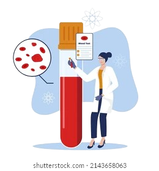
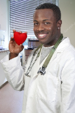
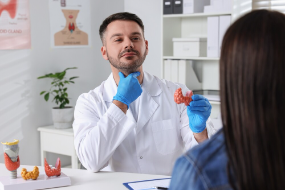

A Clínica Salute tem como objetivo dar qualidade de vida a todos aqueles que acreditam que a saúde é o bem mais precioso, por isso levamos a sério tudo que fazemos, sempre prestando um serviço de modo humanitário. Juntos podemos construir uma socieadade mais saudável.
"A cada dia cerca de 3 mil pessoas morrem no mundo vítimas de doenças negligenciadas..."Fonte:Pastoral da Criança

Aqui nós oferecemos os melhores tratamentos, exames laboratóriais, profissionais qualificados e certificados.
Esses são nossos médicos:
Arnaldo Batista: Cardiologista

Beto Miranda: Endocrinologista

Cessar Menesses: Neurologista
Amanda Sousa: Psicóloga
Beatriz Silva: Nutricionista
Carina Alencar: Ortopedista
Serviços Laboratóriais
🔬 Hemograma completo
🔬 Glicemia
🔬 Perfil lipídico
🔬 Ureia e creatina
🔬 Sódio e potássio
🔬 Hemoglobina glicada (HbA1c)
🔬 Amilase e Lipase
🔬 Gasometria arterial
🔬 TSH e T4 livre
🔬 Prolactina
Conhça tudo que podemos oferecer para você e para toda a sua familia, um espaço tecnológico, confortável e acolhedor. Atendemos com praticidade, rapidez, seguraça e sem dúvida com responsábilidade!